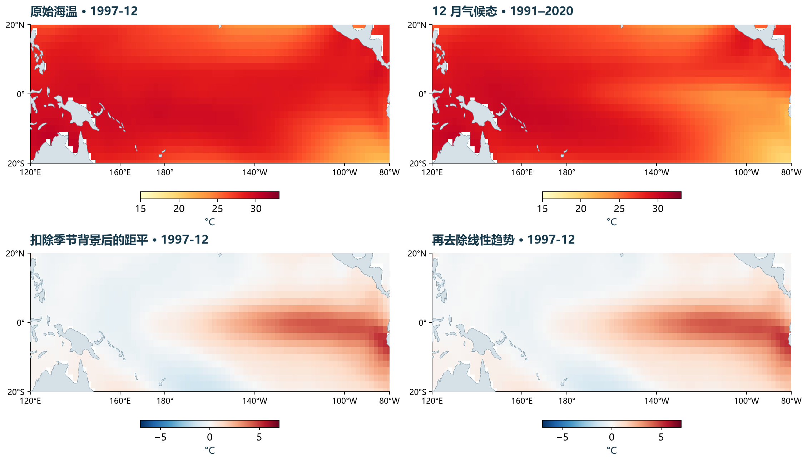
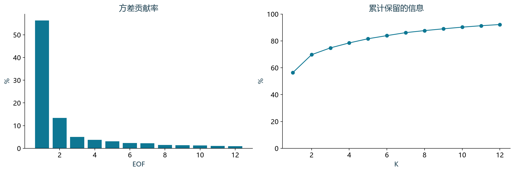
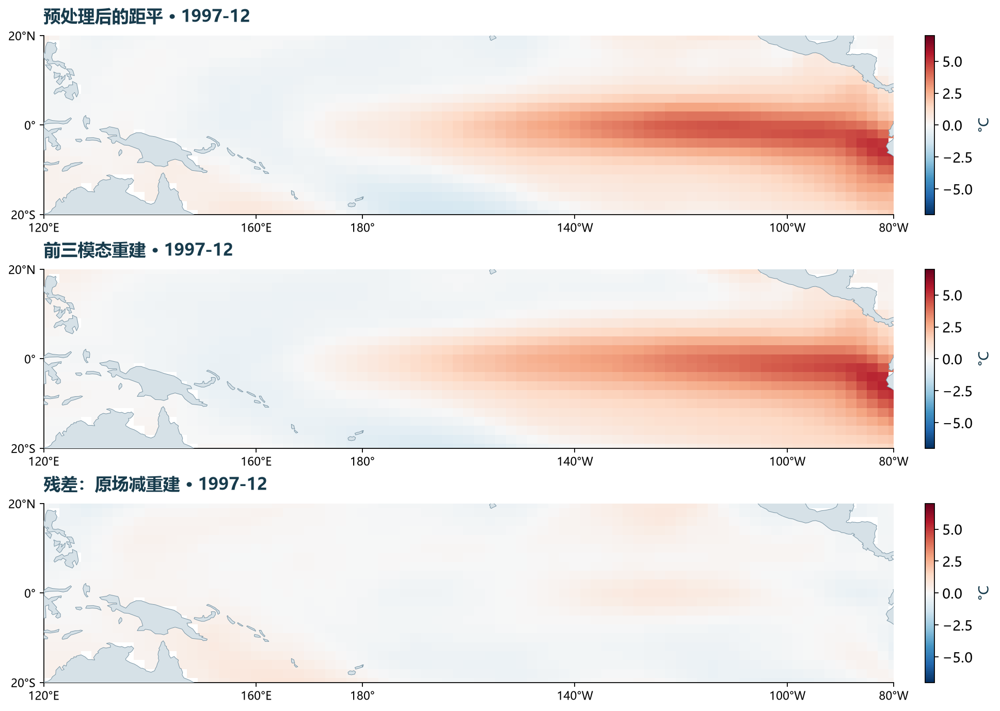

把一叠海温图变成一张表
先想象每个月都有一张海表温度图。按固定顺序读出所有有效海洋格点，把它们排成一行；再把不同月份逐行叠起来。一行是一张地图，一列是某个地点随时间变化的记录。
记月份数为 T、有效格点数为 M，原始数据矩阵 S 就有 \(T \times M\) 个数。经纬度另行保存，之后可把每一列放回地图。整个分析使用同一海洋掩膜；陆地和缺测值不能当作 0°C 的观测。
本例的矩阵有 564 行、1,626 列。陆地与缺测格点从所有月份统一移除，不把陆地的零值放进矩阵。时间步长是一个月。
| 月份 | 160°E, 0° | 180°, 0° | 140°W, 0° | … |
|---|---|---|---|---|
| 1979-01 | \(S_{11}\) | \(S_{12}\) | \(S_{13}\) | … |
| 1979-02 | \(S_{21}\) | \(S_{22}\) | \(S_{23}\) | … |
| … | … | … | … | … |
| 2025-12 | \(S_{564,1}\) | \(S_{564,2}\) | \(S_{564,3}\) | … |
为什么不用直接比较原始温度？
西太平洋常年偏暖，东太平洋通常较冷。如果直接分解原始海温，平均背景与季节循环可能占据主要位置。我们关心的是“相对当季背景的变化”，因此要先定义异常。
先明确：我们要解释哪种变化？
原始海温同时包含冷暖海域的平均差异、每年重复的季节循环，以及更长或更短时间尺度的变化。本例先减去各格点 1991—2020 年对应历月的平均海温：一月减一月气候态，七月减七月气候态，得到月距平 A。
接着在每个格点，用整个分析期拟合含截距的线性趋势，并减去拟合直线，得到 X。这样讨论的是偏离该线性背景的波动。去趋势是一项研究选择；趋势本身有研究价值时，可以保留并单独解释。
中心化是减去每一列的时间均值，与减去十二个月的气候态不同。距平相对于基准期定义，未必在整个分析期均值为零；含截距的最小二乘去趋势已使残差近似零均值，计算时再检查中心化。
同一个月，四种数据

去趋势是一项选择，并非 EOF 的必选项。本例用它突出年际起伏；若研究长期变暖，应保留趋势或另外分析。仅去季节循环也不保证整个分析期的每列均值恰好为零。
给面积合适的权重
等经纬度网格上的格点并不代表同样大的面积：相同经度宽度在高纬更窄。为让平方变化量按面积累计，本例将每列乘以 \(w = \sqrt{\cos \varphi }\)，\(\varphi \) 为纬度。平方后，权重就是 \(\cos \varphi \)；因此加权矩阵为 \(Y = XW\)。
面积加权与逐格点标准化回答不同问题。除以各列标准差会让低振幅与高振幅地点拥有相同的初始方差，改变模态。本例保留海温的物理振幅，只做面积加权；后面把 PC 调整为单位方差，仅是分解结果的配对缩放。
面积权重回答：谁代表更多海面？
同样 \(2^{\circ}\times 2^{\circ}\) 的经纬度格点，越靠近极地面积越小。规则经纬网格用 \(\cos \varphi \) 近似相对面积；平方和里需要这个权重，所以分解前乘 \(\sqrt{\cos \varphi }\)。
标准化回答：每个格点是否一样重要？
除以各格点标准差会让弱变化与强变化区域获得相近地位，得到相关矩阵型 EOF。本例保留 °C 幅度，计算协方差型 EOF。两者回答的问题不同。
寻找投影最分散的方向
把某个月的 M 个加权数值看作空间中的一个点，每个月就对应一个点。选一条穿过原点的方向 v，把所有点投影到它上面，得到时间序列 \(p = Yv\)。第一 EOF 选择使这条序列方差最大的单位方向。
必须规定 v 的长度为 1，否则把它放大就能任意增加投影方差。第二 EOF 在与第一方向垂直的方向中继续寻找最大方差，后续模态依次类推。这里的“最大”由所选时段、区域和预处理共同决定。
手算例子：三个已中心化的时刻、两个等权格点，\(X = [[-1,-2],[0,0],[1,2]]\)。三点完全落在方向 (1,2) 上，所以 \(v_{1} = (1,2)/\sqrt{5}\)。这是完全相关的理想例子，仅演示投影与 SVD，不再对它去趋势。
转动坐标轴，寻找最能保留变化的方向
这里使用当前格点数据中赤道 180° 与 140°W 的预处理距平。两维实验帮助理解投影；它的解释率不是全海盆 EOF1 的解释率。
从最大方差到特征向量
约束方向长度为 1，否则仅放大坐标轴就能任意增大方差。对 \(v^{T}Cv - \lambda (v^{T}v - 1)\) 求导，得到 \(Cv = \lambda v\)；取最大特征值对应的方向，就是 EOF1。后续方向须与已选方向正交。
SVD 一次求出方向、强度与时间变化
奇异值分解把 Y 写成 \(U\Sigma V^{T}\)。本页采用经济型分解，令 \(r = \operatorname{min}(T,M)\)，则 U 为 \(T \times r\)，\(\Sigma \) 为 \(r \times r\)，V 为 \(M \times r\)；其中部分奇异值可以为零。V 的列是加权空间中的 EOF 方向，奇异值 s 从大到小排列，未经标准化的 PC 为 \(U\Sigma \)。
采用样本协方差的 T−1 分母时，第 k 个特征值为 \(\lambda _{k} = s_{k}^{2}/(T-1)\)，也就是该未标准化 PC 的方差。解释方差比为 \(s_{k}^{2}\) 除以所有奇异值平方之和，分母包含全部模态。
在两格点例子中，\(C = [[1,2],[2,4]]\)，唯一非零奇异值为 \(\sqrt{10}\)，特征值为 \(10/(3-1) = 5\)。另一个方向没有变化，因此只需一个模态就能还原这个理想数据集。
| 符号 | 形状 | 含义 |
|---|---|---|
| Y | \(T \times M\) | 面积加权后的异常矩阵 |
| U | \(T \times r\) | 时间方向，列向量长度为 1 |
| \(\Sigma \) | \(r \times r\) | 按大小排序的奇异值 \(s_{k}\) |
| V | \(M \times r\) | 加权空间中的正交方向 |
| r | min(T,M) | 这里使用经济型 SVD；中心化（减去各列均值）会降低有效秩 |
一个能手算到最后的例子
以下是已中心化的教学矩阵，不是海温观测，也不再对这三个时间点去趋势。第二列始终是第一列的两倍，因此只有一个有效方向。
手算检查：第一个时刻 \(-1 \times (1, 2) = (-1, -2)\)。只有一个模态就能完全恢复矩阵。真实海洋通常没有这种完美关系，因此会留下残差。
地图与曲线要配在一起读
页面将 PC 缩放为样本标准差 1 的无量纲曲线 z，并将对应空间图换算为物理载荷 L，单位为 °C。某时刻该模态在某格点的贡献就是 \(z_{k}(t) \times L_{k}(j)\)。\(z = +1\) 时，地图颜色给出该模态的海温贡献；\(z = -1\) 时，正负反转。
EOF 的整体符号没有物理唯一性：地图和 PC 同时乘以 −1，乘积、解释方差和重建完全相同。比较不同软件或时段时，先统一符号约定，再比较形状。正 PC 也不代表整个区域都偏暖，要看各处载荷的符号。
两格点例子的标准化 PC 为 [−1,0,1]，物理载荷为 [1,2]°C。最后一个时刻的贡献是 \(+1 \times [1,2]\)，第一个则为 \(-1 \times [1,2]\)。这同时说明：空间图告诉你“哪里、多少”，PC 告诉你“何时、正向还是反向”。
试着把一个模态单独播放
翻转后为什么地图没变？
EOF 和 PC 同时乘 −1，乘积不变。颜色的正负本身没有唯一的物理方向；必须把空间型和对应时间系数放在一起读。这里显示的是该模态贡献，而不是海温总值。

重建检验：保留了什么，遗漏了什么？
将前 K 个模态的贡献相加，得到重建场；原场减重建场是残差。保留更多模态会降低这批训练数据的加权总平方误差，但不保证每个格点、每个月的误差都逐步降低，也不等于预测能力提高。
这里重建的是预处理后的 X。要返回原始海温，还需加回拟合趋势、截距和历月气候态。模态是数据的统计分解；识别物理过程，还需要其他变量、机制证据和对时段、区域、预处理选择的敏感性检查。
解释方差大不等于通过显著性检验。North 经验准则用 \(\delta \lambda \approx \lambda \sqrt{2/N_{\mathrm{eff}}}\) 描述特征值的典型抽样误差；\(N_{\mathrm{eff}}\) 指适用假设下的独立样本信息量，不能直接当成月数。相邻特征值难以分离时，单个模态可能相互混合。本页未据此赋予任何“显著”标签。
预处理后的距平
模态重建
\(\text{残差}=\text{原场}-\text{重建}\)
三幅图统一使用 ±7°C 色标，便于直接比较。浏览器数据保留到 0.001°C；精确结果与完整秩验证见下载包。

K 应该怎么选？
结合碎石图、累计贡献率、残差的空间结构，以及研究问题决定。80% 或 90% 都不是普遍适用的正确门槛。这里的重建误差是样本内压缩误差，不是未来预测能力。
结果能相信到什么程度？
保持时段、区域和权重相同，仅改为不去趋势，EOF1 贡献率从 56.34% 变为 51.30%。两种第一空间方向的绝对余弦为 0.9999。这是一项具体敏感性检查，不是全部稳健性的证明。
还需要检查分析区域和时段、异常基准、缺测处理，以及相邻特征值是否足够分离。海温序列有自相关，564 个月不等于 564 个独立样本；本页不把贡献率当作显著性概率。
数学上正交 ≠ 物理上独立。EOF 可以把多个过程混在一个模态里，也可能把一个过程拆到多个模态。要命名一个物理机制，还需要其他变量、独立证据和动力学解释。
动手回答，检查是否真正理解
演示中某格点载荷为 +0.8°C，当月标准化 PC 为 −1.5。该模态贡献是多少？
\(-1.5 \times 0.8 = -1.2^{\circ}C\)。这是该模态对预处理后异常的贡献；其他模态仍可叠加。
为何在进入 SVD 前乘以 \(\sqrt{\cos \varphi }\)，而不是直接乘以 \(\cos \varphi \)？
平方后的权重才应为面积因子 \(\cos \varphi \)。若先乘 \(\cos \varphi \)，平方项就带有 \(\cos ^{2}\varphi \)，表示另一种空间度量。
把前两个模态增加到前五个模态，能直接保证什么？
增加正交模态会减少或保持训练样本的加权总平方误差。预测能力需要独立验证；单个格点、单个月份的误差也不必单调下降。
常见误区，逐个澄清
EOF 和 PCA 是两种不同算法吗？
这里采用的是同一套线性代数：对中心化、加权的场做主成分分析。气候学中通常把空间方向称为 EOF，把对应时间系数称为 PC。比较结果时，还要核对矩阵方向、权重和缩放。
所有格点都应该先除以标准差吗？
取决于问题。保留原始振幅的协方差分析关注较大的物理变化；逐格点标准化后，较弱变化的地点也获得同等初始方差。两者可能得到不同模态。给 PC 做单位方差缩放，则只改变展示约定。
EOF 图是某个月真实发生的海温图吗？
它是从全部样本提取的空间模式。页面中的物理载荷图表示标准化 PC 为 +1 时，该模态贡献的海温异常。某个月的分析场通常是多个模态贡献之和。
PC 互不相关，是否说明物理过程互不影响？
不说明。不同 PC 在拟合样本中的零时滞协方差为零，是构造产生的性质；这不等于统计独立，也不排除非线性联系或滞后关系。EOF 的正交约束也不要求真实物理过程彼此正交。
解释方差 40% 是否表示每个格点都解释了 40%？
不是。这个假设数字表示整个选定区域、时段和预处理下的加权总方差占比。局地解释程度可以很不同，应查看格点重建误差或局地方差占比；它也不是预测准确率。
为什么换时段后 EOF2 的形状可能明显变化？
EOF 由样本协方差决定。样本、区域、权重或预处理变化都会改变它；相近特征值对应的方向尤其容易发生混合。此时应同时检查相邻模态共同张成的子空间及重建表现，避免只追踪一个编号。
拿到数据，自己重算一遍
下载包包含从 NOAA 月度文件提取的原始海温子集、逐文件来源与 SHA-256、完整精度数组、CSV 表、双语 PNG/PDF 图和 Python 脚本。子集保留原格点值，没有额外空间插值。
python -m pip install numpy pandas matplotlib netCDF4
python grid_eof.py --subset sst-subset.npz --out results \
--land ne_110m_land.geojson代码的核心只有几行，难点在于先把 X 定义清楚：
Y = X * weights
U, s, Vt = np.linalg.svd(Y, full_matrices=False)
fraction = s**2 / np.sum(s**2)
PC = U * np.sqrt(len(X) - 1)
loading = (Vt.T * s / np.sqrt(len(X)-1)) / weights[:, None]
reconstruction = PC[:, :K] @ loading[:, :K].T下载快照：2026-10-14。选用 1979–2025 完整年份便于教学复现，不代表实时监测。ERSSTv5 与参考作品使用同类产品；本页从 NOAA 原始月度文件独立计算，没有照搬其数值或图像。
数据、方法与参考
- NOAA NCEI · ERSST 产品说明 / Product documentation
- NOAA NCEI · ERSSTv5 月度 NetCDF / Monthly files
- Huang et al. (2017) · ERSSTv5 dataset DOI
- NumPy: numpy.linalg.svd — factorization and matrix dimensions
- eofs: Method of solution — field arrangement and SVD
- eofs: standard API — scaling, covariance maps, reconstruction, and sampling assumptions
- NCAR Climate Data Guide: EOF analysis — weighting and interpretation
- NCAR NCL: EOF examples — maximum variance and sign conventions
- SciPy: detrend — least-squares linear and constant detrending
- NOAA PSL: Ocean WRIT monthly time-series methodology
- NCAR NCL: North eigenvalue separation rule
- NCAR NCL: effective sample size and serial-correlation assumptions
- Natural Earth · Public-domain land outlines
展示结构参考 Niño3.4 Monitor 的空间图—时间曲线组织方式。保留 TAO 浮标版，可比较离散站点与规则格点的分析差异。